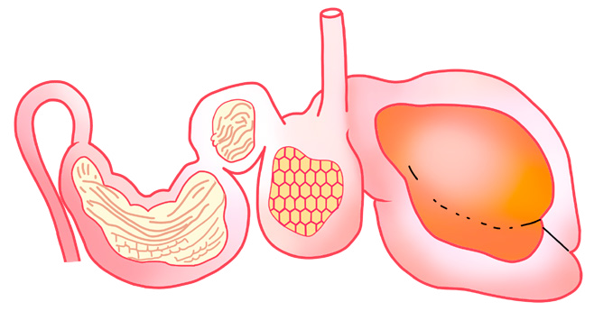

52
Student’s Book - Form Two
Biology for Secondary Schools

Omasum
Duodenum
Oesophagus
Rumen
Reticulum
Abomasum
Pyloric sphincter
Figure 2.8: Internal structure of the ruminant’s digestive system
When the ruminant animal is resting, the food stored in the rumen is brought back to the mouth (regurgitated) periodically
for
further
chewing.
The regurgitated food is thoroughly chewed, rolled and swallowed again.
Instead of the food passing again into the rumen, it passes to the reticulum which is the second chamber of the stomach. In the reticulum, the food is mixed thoroughly with water and becomes soft, watery, and less greenish compared to food in the rumen. From the reticulum, the food passes to the third chamber of the stomach called the omasum, which is the smallest among the four chambers of the stomach. In the omasum, the food is further mixed
and some water is absorbed from it. In
this chamber, the food is in the form of fine particles and less watery. Then, the food proceeds to the fourth chamber of the stomach, the abomasum. This is the true stomach similar to that of other mammals, including human beings.
The abomasum secretes gastric juices
that contain hydrochloric acid and digestive enzymes. The hydrochloric acid kills harmful bacteria and other germs that entered the body with the food. The gastric juices contain enzymes that digest carbohydrates, cellulose, proteins, and fats. From this point, the digestion process continues as in human beings.
Differences between the digestive system of human beings and that of ruminants
The digestive system of a ruminant is
different from that of a human being.
Ruminants have a more elaborate system
to enable cellulose digestion. Like other
mammals, including human beings, the
digestive system of ruminants has different
parts including the mouth, pharynx,
oesophagus, stomach, duodenum, ileum,
colon, caecum, appendix, rectum, and
anus. However, the structure of the
digestive system of ruminants differs from
08/04/2026 10:18:15